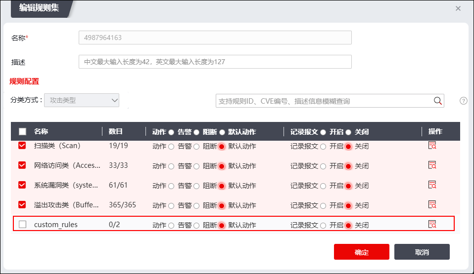
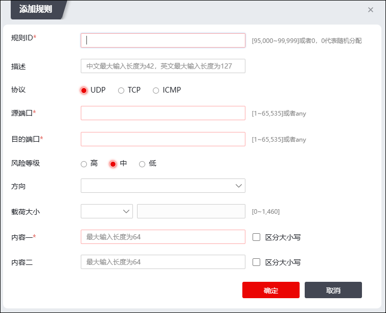

除了系统自带的规则库，入侵防御模块也允许管理员根据特定的需要自行定义规则，以应对规则库尚未收录新发现的攻击情形。自定义规则生效的前提条件是：
1）入侵防御规则集生效，这要求入侵防御规则集被访问控制规则引用，操作详见 配置访问控制规则。
2）入侵防御规则集添加了自定义规则，操作详见 规则集管理。
其中，入侵防御规则集添加自定义规则时，自定义规则的位置如下图红框所示（规则集分类方式以“攻击类型”为例）。

添加自定义规则的操作如下：
| 步骤1 | 选择 ，激活“自定义规则”页签，点击“添加”，弹出界面如下图所示，可在此处添加自定义规则。 |

在设置入侵防御自定义规则时，各项参数的具体说明如下表所示。
参数 |
说明 |
|---|---|
规则ID |
必填项。设置自定义规则的编号，不能重复，输入范围：95000-99999，0代表随机分配。 |
描述 |
设置自定义规则的具体说明。描述信息可以方便管理员区分不同的自定义规则的功能。 |
协议 |
设置自定义规则匹配的协议类型。可选项：ICMP、TCP、UDP。 |
源端口 |
必填项，设置自定义规则检测的源端口，可输入1-65535或any。 |
目的端口 |
必填项，设置自定义规则检测的目的端口，可输入1-65535或any。 |
风险等级 |
设置自定义规则的风险等级，可选项：高，中，低。 |
方向 |
设置自定义规则检测的方向，可选项：请求方向、响应方向，不选时两个方向均检测。 |
载荷大小 |
设置自定义规则检测的应用层数据大小，可选项：等于、大于、小于、范围，输入范围：0-1460，单位为字节。 |
内容 |
至少填写一条，设置自定义规则检测的报文中date部分的字符串，勾选“区分大小写”，对内容中字母进行大小写检查，不勾选不进行大小写检查。 |
| 步骤2 | 配置完成后，点击【确定】按钮，完成自定义规则的添加。 |
| 步骤3 | 在自定义规则列表中勾选新添加的自定义规则，点击“”启用该自定义规则。启用的自定义规则方可进入入侵防御“custom”类型的规则库中。 |
|
²自定义规则集支持导入/导出操作，点击对应的“导入/导出”按钮即可完成相关操作。需要注意的是，导入的自定义规则集会覆盖当前系统的自定义规则集，故在导入自定义规则集前，建议管理员进行导出备份操作。 |